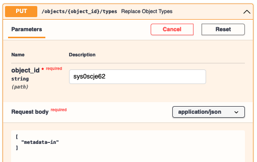
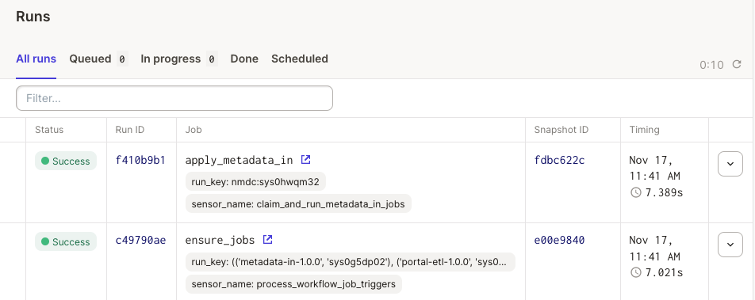

Submit Metadata as JSON¶
Create a Data Repository Service (DRS) Object¶
I have created a public gist on Github via https://gist.github.com/ (a free service) for a fake biosample:
{"biosample_set": [{
"id": "fake",
"env_broad_scale" : {
"term" : {"id": "ENVO:01000253"}
},
"env_local_scale" : {
"term" : {"id": "ENVO:01000621"}
},
},
"env_medium" : {
"term" : {"id": "ENVO:01000017"}
}}
]}
We will use this example for the tutorial. The link to the gist is
https://gist.github.com/dwinston/591afa6de4216d8fc4164c39f6418866, and if you click on the Raw
button at the top-right corner of the code display window, you will get a
URL
for the raw data.
To create an object in the API, we need at least a URL, file checksum, file size, and the time the file was created / last modified prior to registration with the API. It's also recommended that you include a file name (with file extension ".json" in this case) and description.
# Example of obtaining sha256 checksum and file size in bytes on the command line:
$ wget https://gist.githubusercontent.com/dwinston/591afa6de4216d8fc4164c39f6418866/raw/4cc38cdf7b5edd9bb6a08897733346b62730002c/fake_biosample.json
...‘fake_biosample.json’ saved...
$ openssl dgst -sha256 fake_biosample.json
SHA256(fake_biosample.json)= c65ae13038ac980662472487a5a36cae23097e9c164fcbf0877b52b957d7faa7
$ stat -f "%z bytes" fake_biosample.json
260 bytes
{
"description": "A fake biosample.",
"name": "fake_biosample.json",
"access_methods": [
{
"access_url": {
"url": "https://gist.githubusercontent.com/dwinston/591afa6de4216d8fc4164c39f6418866/raw/4cc38cdf7b5edd9bb6a08897733346b62730002c/fake_biosample.json"
}
}
],
"checksums": [
{
"checksum": "c65ae13038ac980662472487a5a36cae23097e9c164fcbf0877b52b957d7faa7",
"type": "sha256"
}
],
"size": 260,
"created_time": "2021-11-17T10:30:00-05:00"
}
After a POST /objects
with the above as the request body, I get back a response object with an id that looks like
sys0***.
Annotate the DRS object with the "metadata-in" type¶
Now, go to PUT
/objects/{object_id}/types
and ensure the types array for the object is ["metadata-in"]. This lets the Runtime know that you
intend for this object to be ingested as NMDC metadata.

Monitor the progress of metadata ingest¶
After tagging the DRS Object as "metadata-in", the NMDC Runtime site
senses
that a new "metadata-in-1.0.0" job should be run given your DRS object id as input. You can then
monitor
runs
of the job.
In general, https://dagit-readonly.nmdc-runtime-dev.polyneme.xyz/instance/runs will give you an
overview of the NMDC Runtime site's job runs. If you have the username and password (ask dehays),
you can administer the underlying Dagster orchestrator via its Dagit web UI via
https://dagit.dev.microbiomedata.org/.
Note
The read-only version is hosted at NERSC in the same
kubernetes pod as the read-write version -- we just haven't gotten around to getting a SSL
certificate for a *.mirobiomedata.org subdomain.
Here's an example of the general Runs view after our new metadata has been ingested:

And indeed it has been ingested! See https://api.microbiomedata.org/nmdcschema/biosample_set/fake (unless we already deleted it -- see section below).
Removing a JSON document¶
Info
You must be authorized to do this. Specifically, a document of the form
{
"username" : <YOUR_USERNAME>,
"action" : "/queries:run(query_cmd:DeleteCommand)",
}
_runtime.api.allow database collection.
Ask a database administrator to be added.
Any to-be-deleted documents are backed up to a separate database immediately prior to deletion.
A call to POST /queries:run with the body
{
"delete": "biosample_set",
"deletes": [{"q": {"id": "fake"}, "limit": 1}]
}
will remove our fake document. Note that you need to be logged in as a user, NOT as a site
client, to execute such a request. The syntax for the request is a subset of the MongoDB delete
command syntax.
Danger
People who can delete documents can currently delete a document from any collection.
{
"delete": "users",
"deletes": [{"q": {"username": "useridontlike"}, "limit": 1}]
}